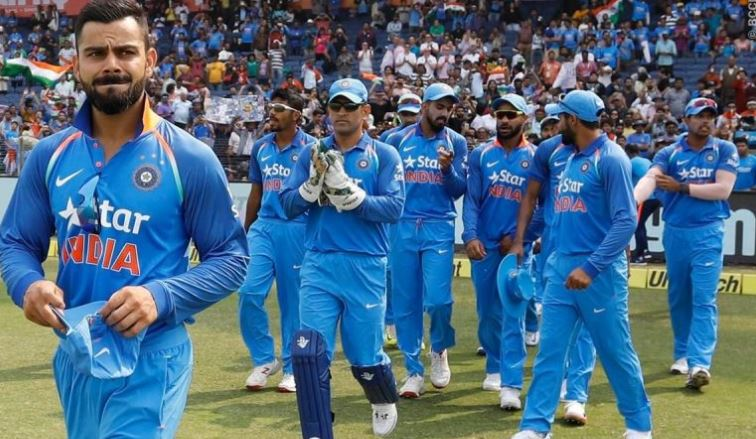

Pramod S Deshmukh.
Corporate Trainer|Manage-O-Tech.
ENTICE

Leadership Lesson One -- from Indian team -- World Cup
30 Jun 2019 | 20:30:46
What we have seen so far --
Virat's Leadership is hovering between Coaching (HTHR) & Delegating (LTLR) styles.He begins with choosing the Right person for the Right job.
Whatever the dressing room talk, then he believes & leaves the bowler alone.
The bowler becomes a situational leader & even if the bowler falters, he doesn't reprimand ; on the contrary reposes full trust & still gives one more over to demonstrate CA-PA.
With fielding, he surely leads from the front to inspire the team to be agile & accurate.
And with batting he has reflected his core competence & shows why he is respected as the best in his domain.
The best part of his Leadership is in his seeking the inputs from senior player Dhoni.
Coming to Dhoni, his presence on the field is an assurance to Virat as well as the team & a eerie scare to the opposition.
Overall fantastic Learnings to be applied to business situations.
-- PramodDeshmukh aka PSD